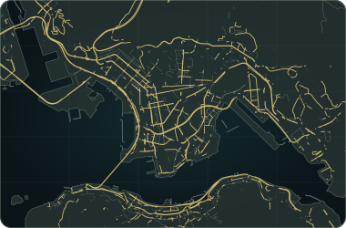

由維港到山頂，穿梭大街小巷。One city. Endless ways to explore.
選擇已支援的建物，不用載入完整香港場景。部分建物需下載較多地圖資料；大型模型檔案可能很大。
普通版可用 Editor 匯入，但複雜材質、夜燈會簡化；合併的窗戶不能逐個選取。TSL 版不能用 Editor r187 普通匯入器還原，亦不連接遊戲日夜控制。

Drag to look · Pinch to zoom
You are at 5th Ave & 35th St